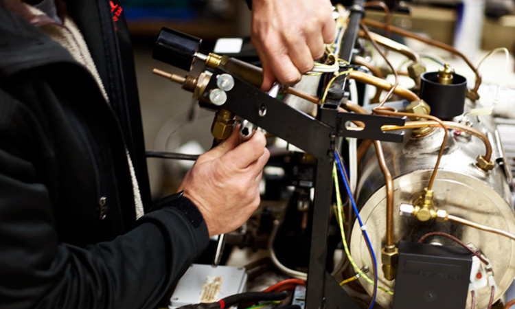

Secure Your Future as a Certified Custodial and Service Specialist for Themed Hospitality Establishments
In the next decade, one of the most serious and unforeseen challenges society will face is a significant shortage of skilled maids for maid cafés in Japan. This deficit is not just a minor inconvenience; it has the potential to cause financial instability and societal unrest.
In light of this impending crisis, becoming a certified maid café professional is not only a wise career choice but also a vital contribution to preserving a beloved cultural tradition. The maid café industry is a lucrative field for those who are qualified. As the demand for skilled maids continues to rise, so do the opportunities for substantial financial rewards.
Propel Your Career as a Barista with Our Courses and Certifications
Unlock your potential and elevate your career as a barista with our comprehensive courses and certifications.
Gain expertise in coffee brewing, latte art, customer service, and more, all designed to set you apart in the competitive world of specialty coffee.
Specialization in Themed Café Attendant
Duration: 24 months
Average industry salary:
Starting at 137,000 USD per year
Cost: 55,000 USD
Specialty Coffee Artistry Certification Program

Duration: 4 weeks
Average industry salary:
53,000 USD per year
Cost: FREE
Technical Maintenance for Commercial Espresso Machinery
Duration: 9 months
Average industry salary:
73,000 USD per year
Cost: 1,000 USD